Notes
IROS/RA-L 2020
“Simultaneous Trajectory Optimization and Force Control with Soft Contact Mechanics”
we present a model for contact interaction and embed it into the high-level motion planning via enforced constraints.
The main contributions of this study are listed below:
- Presentation of a dynamic interaction model based on soft contact mechanics for a predefined geometry with Hertz visco-static theory.
- Incorporation of the interaction model with a distributed DDP-type trajectory optimization with constraints to generate the desired Cartesian path and force profile.
- Experimental validation of the derived contact dynamical model and implementation of the proposed trajectory optimization algorithm
In this paper, the authors derived a soft contact dynamical model and incorporated it into a trajectory optimizer capable of handling state, control, and contact constraints. Trajectories were solved using the ADMM (Alternating Direction Method of Multipliers) trajectory optimizer, which included two sub-optimization problems; namely, DDP and projection blocks. Obtained trajectories were experimentally
Sintov, Avishai, et al. “Motion planning for dual-arm manipulation of elastic rods.” IEEE Robotics and Automation Letters 5.4 (2020): 6065-6072.
“PnuGrip: An Active Two-Phase Gripper for Dexterous Manipulation”
The design of a two-phase parallel jaw gripper with an active pneumatic brake is presented in this paper. The finger enables re-orientation of a grasped object by using a pneumatic braking mechanism to transition between free-rotating and fixed (i.e., braked) phases. Several brake configurations and mechanisms are analyzed and a pneumatic disk-brake is selected since it both satisfies the design requirements and relies on a readily available power source. The gripper has several advantages over previous designs. The most important is the ability to transition between the free and brake phases independent of the grasping force. Other advantages include a compact and simple design to enable grasping in clutter, an encoder to estimate the rotation of the grasped object, and quick and repeatable actuation.
Murooka, Takayuki, Kei Okada, and Masayuki Inaba. “Diabolo Orientation Stabilization by Learning Predictive Model for Unstable Unknown-Dynamics Juggling Manipulation.” International Conference on Intelligent Robots and Systems. IEEE/RSJ. 2020.
Estimation of Diabolo State
- Depth camera to obtain point cloud
- State represented by pitch and yaw angle (roll angle does not affect diabolo’s orientation)
- Low pass filter to smooth the state
Patankar, Aditya, Amin Fakhari, and Nilanjan Chakraborty. “Hand-Object Contact Force Synthesis for Manipulating Objects by Exploiting Environment.”
Problem:
- Motors are not powerful enough to balance the weight of the object.
- Find the optimal contact forces by exploiting object-environment contacts.
Assumptions:
- Soft-finger contacts
- Quasi-static manipulation
Constraints:
- Friction cone constraints (formulated as Second order cone) at manipulator and environment contacts.
- Upper bounds for the normal contact forces.
- Force equilibrium (Quasi-static assumption).
Objective:
- Grasping force optimization problem (GFOP)
- $\min \max_i (F_{n, i})$
- $\min \max_i (|F_{n, i}|)$
- Torque optimization problem (TOP) $$
- $\min \max_i (\tau_i)$
Formulated as a second order cone problem (SOCP), which is a convex optimization problem and can be solved by CVX toolbox.
Future works:
- Trajectory planning for heavy object pivoting.
Grasp Synthesis
Lyons, Damian. “A simple set of grasps for a dextrous hand.” Proceedings. 1985 IEEE International Conference on Robotics and Automation. Vol. 2. IEEE, 1985.
Grasp types:
Encompass grasp (power grasp, envelop grasp)
This grasp provides firm attachment to the grasped object, but does not facilitate any subsequent fine manipulation. Thus if this grasp is used, manipulation can only be performed using the degree of freedom of the arm and wrist. Also, if the object is mall and neither firmness of contact nor fine precision matter then this grasp is a good choice.
Lateral grasp (pinch grasp)
The fingers and thumb come together in somewhat the same manner as a two-finger gripper. The flat surfaces of the fingers, rather than the fingertips, are used to grip the object. This provides a firm way to grip flat surfaces, the object size dictating how many fingers are necessary to oppose the thumb. The grasp allows some control of the orientation of the long axis of the gripped object.
Precision grasp
Finger tip only, allows a maximum amount of possible manipulation.
Nguyen, Van-Duc. “Constructing force-closure grasps.” The International Journal of Robotics Research 7.3 (1988): 3-16.
Construct force-closure grasps based on the shape of the grasped object.
Combination of individual primitive contacts (hard/soft point contacts with/without friction).
Any complex contact can be described as a convex sum of the primitive contacts:
Edge contact without friction
Convex sum of two frictionless contact points (at one end of the edge contact)
Face contact
Convex sum of three contacts at the vertices
In an $n$-dimensional vector space, a set of vectos $V$ is vector-closure if and only if $V$ has at least $n+1$ vectos, such that
- $n$ of the $n+1$ vectors are linearly independent.
A strictly positive combination of the $n+1$ vectos is the zeros vector.
$$ \sum_{i=1}^{n+1} \alpha_i \boldsymbol{v}_i = \boldsymbol{0}, \quad \alpha_i > 0.$$
Force closure
1. Force direction closure
Now consider the synthesis of 2D force closure grasp.
A set of plannar wrenches $W$ can generate force in any direction iff there exists a three-tuple of wrenches $(\wb_1, \wb_2, \wb_3)$ whose respective force directions $\fb_1, \fb_2, \fb_3$ satisfy
- Two of the three directions $\fb_1, \fb_2, \fb_3$ are independent.
- A strictly positive combination of the three directions is zero: $\alpha \fb_1 + \beta \fb_2 + \gamma \fb_3 = \boldsymbol{0}$.
2. Torque closure
Achieve torque closure with only pure forces.
A set of plannar wrenches $W$ can generate clockwise and counterclockwise torques iff there exists a four-tuple of forces $(\wb_1, \wb_2, \wb_3, \wb_4)$ such taht the following hold
- Three of the four forces have lines of action that do not intersect at a common point or at infinity.
Lef $\fb_1, \cdots, \fb_4$ be the force directions of $\wb_1, \cdots, \wb_4$. Let $\pb_{12}$ be the point where the lines of action of $\wb_1$ and $\wb_2$ intersect. There exists $\alpha, \beta, \gamma, \delta > 0$ such that
$$\pb_{34} - \pb_{12} = \pm(\alpha \fb_1 + \beta \fb_2) = \mp (\gamma \fb_3 + \delta \fb_4).$$
Finding Force-Closure Grasps
Two Opposing Fingers
Two point contacts with friction at $P$ and $Q$ forms a plannar force-closure grasp iff ${\rm arg}(P - Q) \in \pm(\mathcal{C}_1 \cap - \mathcal{C}_2)$ where $\mathcal{C}_1$ and $\mathcal{C}_1$ are the two friction cone.
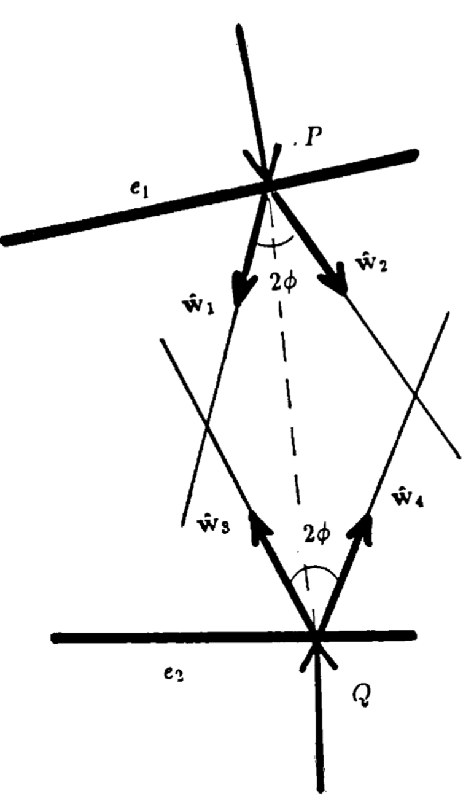
Nguyen, V. D. (1989). Constructing stable grasps. The International Journal of Robotics Research, 8(1), 26-37.
Montana, D. J. (n.d.). The condition for contact grasp stability. Proceedings. 1991 IEEE International Conference on Robotics and Automation. doi:10.1109/robot.1991.131612
Montana, D. J. (1992). Contact stability for two-fingered grasps. IEEE Transactions on Robotics and Automation, 8(4), 421â430. doi:10.1109/70.149939
Ciocarlie, Matei, Corey Goldfeder, and Peter K. Allen. “Dimensionality reduction for hand-independent dexterous robotic grasping.” (2007): 3270-3275.
A grasp planning algorithm that optimizes hand posture in a low dimensional eigengrasp space to find effective pre-grasp postures. These pre-grasps are then heuristically developed into stable, form closure grasps. The core of this algorithm is a simulated annealing optimization, and since this is a stochastic method, we can use multiple runs to find different form closure grasps for
the same model.
Ciocarlie, Matei T., and Peter K. Allen. “Hand posture subspaces for dexterous robotic grasping.“ The International Journal of Robotics Research 28.7 (2009): 851-867.
The offline eigengrasp planner optimizes the wrist position and orientation while moving along the subspaces defined by the eigengrasps to maximize the number of contacts between the hand and the object. In an online version, the planer uses the eigengrasps as initial postures in the optimization process; the final finger poses are obtained using GraspIt! The use of eigengrasps, however, restricts the hand to move along predetermined trajectories in the joint space, which might limit the general applicability of the planner.
Goldfeder, C., Ciocarlie, M., Dang, H., & Allen, P. K. The columbia grasp database. (2008).
Platt, R., Fagg, A. H., & Grupen, R. A. (2010). Null-Space Grasp Control: Theory and Experiments. IEEE Transactions on Robotics, 26(2), 282295. doi:10.1109/tro.2010.2042754
Cordella, Francesca, et al. “Human hand motion analysis and synthesis of optimal power grasps for a robotic hand.“ International Journal of Advanced Robotic Systems 11.3 (2014): 37.
Roa, Maximo A., et al. “Power grasp planning for anthropomorphic robot hands.“ 2012 IEEE International Conference on Robotics and Automation. IEEE, 2012.
Major issues:
- Large number of DoF
- Object and hand geometries
- Environment (obstacles)
Grasp types:
- Precision grasp (Fine grasp)
- number of contact is low
- Pinch grasp
- Power grasp (envelop grasp)
Existed methods:
- Eigengrasp [Ciocarlie & Allen 2009]
- grasping the object by parts
- Human experience
Highlights:
The approach proposed in this work samples the object surface to choose the best locations for the hand using a metric which takes into account the local curvature of the object. Later, a grasp strategy is chosen according to the size of the part of the object where the hand is going to be located. Once the relative pose of the hand with respect to the object is chosen, the offline planner moves the hand towards the object until it collides with the object, and the fingers close around the object in a way that tries to maximize the contact surface. Finally, the resulting contact points are detected, the grasp quality is evaluated and the grasp is stored
Pipeline:
- Samples the object surface for an opposing grasp with two or three fingers
- Aligns the other fingers to match the local curvature of the object surface
Kinematics
Montana, D. J. (1988). The Kinematics of Contact and Grasp. The International Journal of Robotics Research, 7(3), 1732. doi:10.1177/027836498800700302
For the orthogonal coordinate frame $(f, U)$, i.e. $f_u(\ub) \cdot f_v(\ub) = 0$ for all $\ub \in U$, the normalized Gaussian frame at a point $\ub \in U$ is defined as $$ \xb(\ub) = \frac{f_u}{|f_u|},\quad \yb(\ub) = \frac{f_v}{|f_v|}, \quad \zb(\ub) = \frac{f_u \times f_v}{|f_u \times f_v|} $$ with origin at $f(\ub)$.
Example
Consider the sphere $S$ of radius $\rho$. Let $S_1 = f(U)$ be the coordinate patch of $S$
The Gaussian frame at a point $s \in S_1$ is given by
Let $S_0$ be a coordinate patch of $S$, with an orthogonal coordinate system $(f, U)$. At a point $s \in S_0$, the curvature form $K$ is defined as the $2 \times 2$ matrix $$ K = \begin{bmatrix} \xb(\ub) & \yb(\ub) \end{bmatrix}^\top \begin{bmatrix} {\zb_u(\ub)}/{|f_u|} & {\zb_v(\ub)}/{|f_v|} \end{bmatrix} $$ where $u = f^{-1}(s)$. The Torsion (connection) form $T$ is the $1\times 2$ matrix $$ T = \yb(\ub)^\top \begin{bmatrix}{\xb_u(\ub)}/{|f_u|} & {\xb_v(\ub)}/{|f_v|} \end{bmatrix} $$ and the metric tensor $M$ is the $2\times 2$ matrix $$ M = \begin{bmatrix}|f_u| & 0 \\ 0 & |f_v| \end{bmatrix} $$
Example
The curvature form, connection form, and metric tensor of the above is example are given by
Sankar, N., Kumar, V., & Yun, X. (1996). Velocity and acceleration analysis of contact between three-dimensional rigid bodies. Journal of applied mechanics, 63(4), 974-984.
Closure equations

For any coordinate system, we have the vector equation
Differentiating each term w.r.t. time $t$ , we get
Differentiating the above equation again, we get
Since $p$ and $o$ are fixed in the same body,
Substitute
Rosales, Carlos, et al. “Synthesizing grasp configurations with specified contact regions.“ The International Journal of Robotics Research 30.4 (2011): 431-443.
The robot verifies that the grasp is kinematically feasible, i.e. that the hand can be moved to a configuration that realizes those contacts
Borst, Ch, Max Fischer, and Gerd Hirzinger. “Calculating hand configurations for precision and pinch grasps.“ IEEE/RSJ International Conference on Intelligent Robots and Systems. Vol. 2. IEEE, 2002.
Precision grasp:
- Only fingertip is in contact with the object
- One contact per finger
- Non-deformable object
- Fingertip model
- 3-DoF Universal Joint (spherical fingertip model), or
- 1-DoF Revolute Joint
Pinch grasp:
Cylindrical fingertip model
Reason: Humans use the pad of their fingertips to increase stability when they manipulate or pick up small and light object.
Cylinder axis is perpendicular to object surface normal
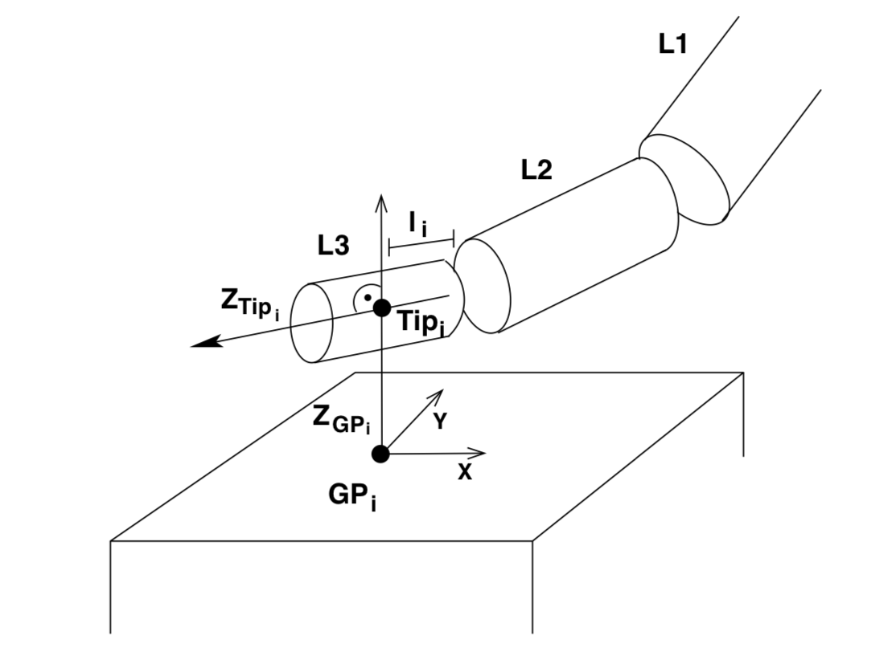
2-DoF = Prismatic + Revolute along $Z_{\rm tip}$
Problem Formulation:
Each finger has four free parameters ($\theta_1,\theta_2, \theta_3, l$)
Equality constraints for the contact terms $h_i(\boldsymbol{x}) = 0$
Corresponding penalty function:
Inequality constraints for the joint limits $g_j(\boldsymbol{x}) \leq 0$
Corresponding penalty function:
Penalty function are chosen so that
Parameter $p_k$ increases in each step.
Optimization problem
Solved by Mathematica builtin Levenberg-Marquardt minimizer.
Pipeline:
- Choose contact points randomly on the object
- Calculate a kinematically valid hand configuration using an optimization approach; Start at (1) if there is none.
- Perform a collision test to see if geometric constraints fail; Start at (1) in case of a collision.
- Compute a quality measure for the grasp.
- Store the grasp in a list sorted by the grasp quality and start at (1) until there are enough grasps in the list or a given time limit is exceeded.
Rosales, Carlos, et al. “Finding all valid hand configurations for a given precision grasp.“ 2008 IEEE International Conference on Robotics and Automation. IEEE, 2008.
Precision grasp planning:
- Determine contact points
- Inverse kinematics
Local convergence method for IK,
- may fail to converge,
- depend on initial estimation, and
- provide only one solution
This paper presents a new method to find all possible configurations that reach the specified contact points.
Assumptions:
- Pre-specified contact points are force/form closure
- Hand is attached to a 6-DoF arm $\Rightarrow$ Computing the possible object pose relative to the hand
- Anthropomorphic hand, each finger has four joints (independently actuated - MA-I; some of them coupled - Shadow, Robonaut, DLR; or locked - UB-3)
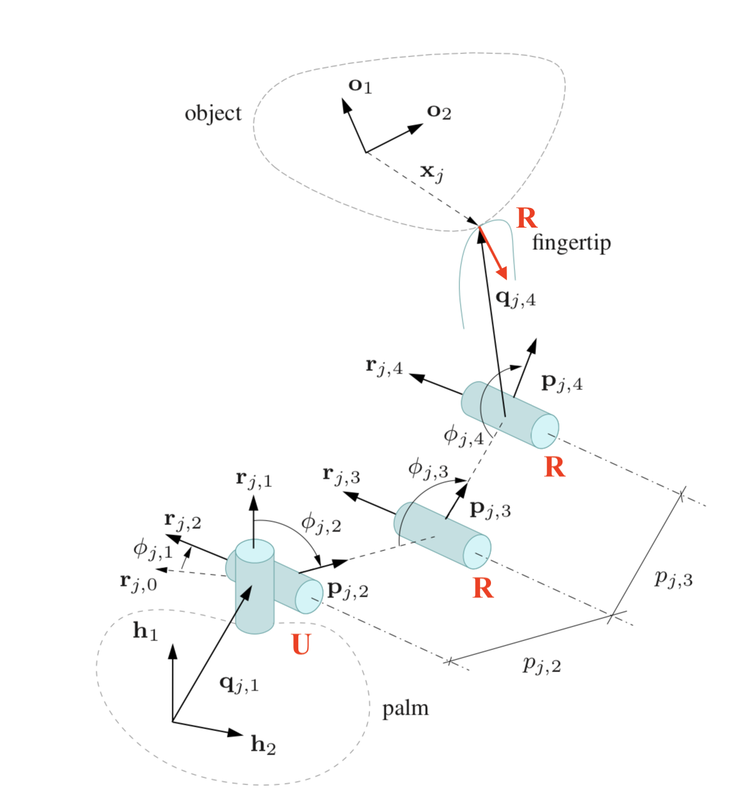
Hand-Object system:
- Contact point $\Rightarrow$ Revolute joint, joint axis along common normal
- Equivalent to $n$-URRR parallel robot
- Need to find a technique robust to singularities
Constraints:
Observation:
- All of equations contain only linear, quadratic, or bilinear monomials ($x_i$, $x_i^2$ or $x_i x_j$) since the joint axis are aligned for the last three joints of a finger.
- Can be completely solved via linear relaxation method [Porta et al. 2008]
Porta, Josep M., Lluis Ros, and Federico Thomas. “A linear relaxation technique for the position analysis of multiloop linkages.“ IEEE Transactions on Robotics 25.2 (2009): 225-239.
Let $q_i = x^2_i$ and $b_k = x_ix_j$ for each quadratic and bilinear monomial, respectively. The equation system can be represented as
where $x$ includes the original and newly defined variables, $L(x) = 0$ is a block of linear equations, and $Q(x) = 0$ and $B(x) = 0$ are blocks of equations of the form $q_i = x^2_i$ and $b_k = x_ix_j$, respectively.
Since all unknown vectors are unit vectors,
As a result, the search space is a rectangular box $\mathcal{B}$.
The algorithm isolates the solutions in $\mathcal{B}$ by iterating two operations, box shrinking and box splitting.
Box shrinking is repeated until either
- the box is reduced to an empty set (no solution), or
- the box is “sufficiently” small (solution box), or
- the box cannot be “significantly” reduced, bisected into two sub-boxes via box splitting, until side lengths are below a given threshold.
Box Shrinking:
Shrink $\mathcal{B}_c$ to the smallest possible box bounding inside $\mathcal{B}_c$ via necessary conditions:
Linear Bounds:
The limits of this new box along $x_i$: solving two linear programs:
- Lower bound LP: Min $x_i, \quad $ subject to: $L(x) = 0, \quad x \in \mathcal{B}_c$,
- Upper bound LP: Max $x_i, \quad$ subject to: $L(x) = 0,\quad x \in \mathcal{B}_c$.
Parabola Bounds:
Portion of the parabola $q_i = x_i^2$ in $\mathcal{B}_c$ is bounded by two half planes (shaded area).
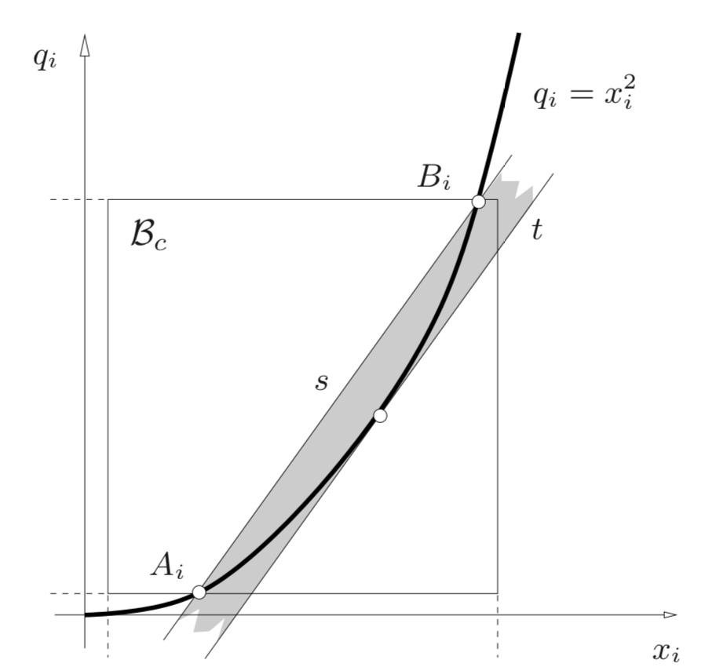
Hyperbolic Bounds:
$b_k = x_i x_j$ necessarily lies inside a tetrahedron of four points, obtained by clipping $\mathcal{B}_c$ with $b_k = x_i x_j$.
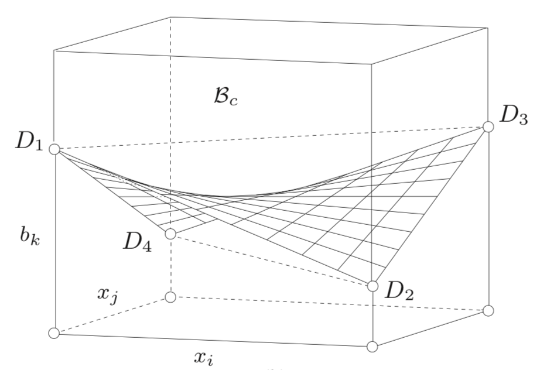
Manipulation
Yoshikawa, Tsuneo. “Manipulability of robotic mechanisms.“ The international journal of Robotics Research 4.2 (1985): 3-9.
Kerr, Jeffrey, and Bernard Roth. “Analysis of multifingered hands.“ The International Journal of Robotics Research 4.4 (1986): 3-17.
Problems:
- Proper force to ensure a secure grasp
- Workspace of a hand
- Finger-joint motions required to produce a desired object motion
Optimal Internal Grasp Force
Pyramid friction cone
For multi-fingered hand with enough flexibility, contact forces $C$ can be decomposed into two parts $C_p$ and internal force $C_h = N\lambda$
Joint limit constraints
Together gives a solution space bounded by a series of linear constraint planes
Let $d_i$ be the distance from some point $\lambda$ to the $i$-th constraint plane, the optimal choice of $\lambda$ will yield the maximum value for the minimum $d_i$
The optimal $\lambda^*$ lies in the center of inscribed sphere of the solution space.
Now we reformulate the original optimization as a linear programming problem. Let
and thus we know for all $i$,
Finally for free variables $(\lambda, d)$, the equivalent problem becomes
which is readily solved by SIMPLEX program.
Manipulating Objects within the Hand
Assumption:
Pure rolling
Nonlinear, non-holonomic, time varying constraints
First order differential equations
No closed-form solution
Three DOF between two bodies
Resultant ODE:
Or as
Hand Workspace
Hand workspace: the range of possible manipulations with a given hand. Workspace is a function of the rolling and sliding that occurs at the contacts.
For highly simplified problem, the solution has proved rather complex. For actual hand with irregularly shaped workspaces, it is likely that numerical methods will be the best way to determine the total workspace.
Remaining problems:
- Orientation workspace
- Rolling and sliding at contact points
- Increase workspace, but
- Workspace will be a function of initial configuration and of the path the object moves along
- Intersection between the fingers and the object
Cutkosky, Mark R., and Imin Kao. “Computing and controlling compliance of a robotic hand.“ IEEE transactions on robotics and automation 5.2 (1989): 151-165.
Cutkosky, Mark R. “On grasp choice, grasp models, and the design of hands for manufacturing tasks.“ IEEE Transactions on robotics and automation 5.3 (1989): 269-279.
Cole, A., Hauser, J., & Sastry, S. (n.d.). Kinematics and control of multifingered hands with rolling contact. Proceedings. 1988 IEEE International Conference on Robotics and Automation. doi:10.1109/robot.1988.12052
The Kinematics of Rolling
Let $c$ be the contact point fixed on the object $o$ at time $t$. The location and velocity of $c$ in the world frame $w$ are
where $\vb_{oc}^o$ is $\bold{0}$ since $c$ is a fixed point on frame $o$.
Let $p$ be the point at the contact coincide with $c$ at time $t$ but not fixed to the object $\rb_{op}(t) = \rb_{oc}(t)$. $p$ will draw a curve on object surface if two objects keep in contact. The location and velocity of $p$ are
Now consider two objects $o$ and $f$, rolling on each other without sliding. It introduces three constraints:
- The position of the point of contact
- The velocity of the point of contact
- The surface normals at the point of contact
We use these first-order constraints to deterdmine the evolution of the contact point.
If we use the map $f: U \mapsto \mathbb{R}^3$ to represent the object surface patch around the point of contact, let $\ub = f^{-1}(\pb)$ , we get
and hence the second constraint becomes
Also, by differentiating the third constraint, we have
Combine the above two differential equations, we may able to solve $\dot{\ub}_o, \dot{\ub}_f$ given $\omegab_o^w$ and $\omegab_f^w$.
They represents six equations but only provide four independent constraints.
Grasping and Manipulability
Finger side
Object side
Note: Suppose the grasp map $G$ has full rank, then prehensility ($\text{null}(G) \,\cap\, FC \neq \emptyset $) implies force closure.
Dynamics and Control
Control objectives:
- Tracking: object center of mass follow desired trajectory
- Maintain contact with No Slipping: none zero contact force within friction cone
Object Dynamics
Newton-Euler equation of the object (world frame)
where $I_w = R_{wo}\, I_o\, R_{wo}^\top$ is the object inertia matrix in the world frame.
Suppose the orientation of the object can be parameterized locally (no singularity) by $\gammab_o \in \mathbb{R}^3$, such that $R_o = R(\gamma)$, there exists a linear transformation $P(\gammab_o)$ so that
Let $X_o = [\xb_o^\top , \gammab_o^\top]^\top$, the object dynamics can be rewritten as
where
Finger Dynamics
System Dynamics
Object dynamics and finger dynamics are connected by forces at finger contact points
Assuming force closure of grasp $G$, the required contact force equals
where $\fb_{\rm null}$ is any internal force belonging to null space of $G$, and $G^\dagger$ is the pseudo inverse of $G$.
Combining the object and finger dynamics, we have
To satisfy the pure rolling constraint, we let
Assuming system will not go through singular configuration, $J^{-1}$ will exist such that
Controller
Nonlinearity cancellation term
Error feedback term
Internal grasp force term (within friction cone)
Control output:
Proof
First plug the control law to the dynamic equation, we get
which is a $m$ dimensional equation ($m > 6$ is the number of joints). To show the objective errors are orthogonal to the arbitrary internal force $\fb_{\rm null}$, we premultiply $GJ^{-\top}$ to both sides of the above equation, and we get
The $\fb_{\rm null}$ is eliminated since $\fb_{\rm null}$ lies in the null space of $G$. Now, $M_o$ is positive definite and $GJ^{-\top}MJ^{-1}G^\top$ is semidefinite, and $\tilde{P}$ is nonsingular by assumption, so that
Appropriate selection of $K_d$ and $K_p$ implies that $X_e, \dot{X}_e \rightarrow 0$.
Cole, Arlene A. “Control of robot manipulators with constrained motion.“ Proceedings of the 28th IEEE Conference on Decision and Control,. IEEE, 1989.
Cole, A. A., Hsu, P., & Sastry, S. S. (1992). Dynamic control of sliding by robot hands for regrasping. IEEE Transactions on robotics and automation, 8(1), 42-52.
Cai, C., & Roth, B. (1987, March). On the spatial motion of a rigid body with point contact. In Proceedings. 1987 IEEE International Conference on Robotics and Automation (Vol. 4, pp. 686-695). IEEE.
Kao, Imin, and Mark R. Cutkosky. “Quasistatic manipulation with compliance and sliding.” The International journal of robotics research 11.1 (1992): 20-40.
Chen, W., & Kumar, V. (1994). Workspace of planar cooperating robots with rolling contacts. Advanced robotics, 9(5), 483-504.
Park, F. C., & Brockett, R. W. (1994). Kinematic dexterity of robotic mechanisms. The International Journal of Robotics Research, 13(1), 1-15.
Montana, D. J. (1995). The kinematics of multi-fingered manipulation. IEEE Transactions on Robotics and Automation, 11(4), 491â503. doi:10.1109/70.406933
Okamura, Allison M., Niels Smaby, and Mark R. Cutkosky. “An overview of dexterous manipulation.“ Proceedings 2000 ICRA. Millennium Conference. IEEE International Conference on Robotics and Automation. Symposia Proceedings (Cat. No. 00CH37065). Vol. 1. IEEE, 2000.
Outline
- Definition of dexterous manipulation
- Kinematics, contact type, and forces for problem formulation
- Dexterous motion planning (grasp planning, quality measure)
- Manipulation vs exploration
- Future
Definition of Dexterous Manipulation
Traditional manipulation: object-centered
Problem is formulated in terms of the object to be manipulated (forces, motion)
Dexterous manipulation: both object and robotic hand are considered
precise control of forces and motions, specialized robotic hand must be used
Approach
- Human knowledge-based approach
- Model-based approach (kinematics and dynamics)
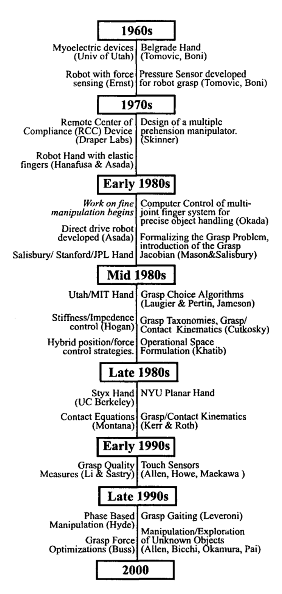
Problem Formulation
Kinematics
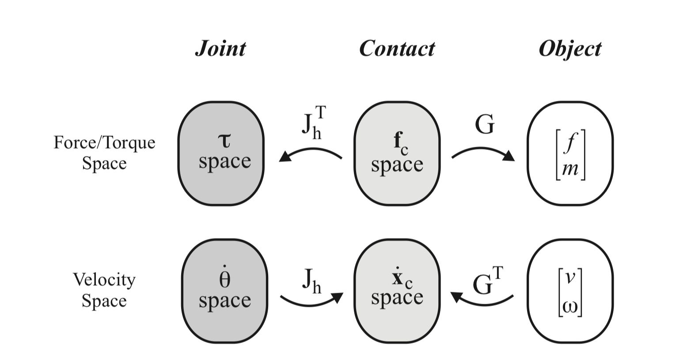
- Grasp Jacobian $G$:
Calculate the required contact forces from the desired force on the object.
Hand Jacobian $J_h$
Calculate the required joint torque from the contact forces
Velocity space
System properties
Over-constrained
Fingers may not be able to accommodate or resist all object motions or forces.
Under-constrained
There are multiple choices for finger joint velocities or torques.
Under-constrained system is desired for dexterous manipulation tasks.
- Treat the combination of fingers and object as a parallel-chain mechanism
- Evaluate the manipulability of the object w.r.t. the palm
Contact modes
- Sliding, rolling, sticking
Contact velocity for pure rolling in the plane:
- maintain contact $v_z = 0$
- No sliding $v_x = 0, \quad v_y = 0$
- No spin $\omega_z = 0$
- Planar rolling $\omega_x = 0$
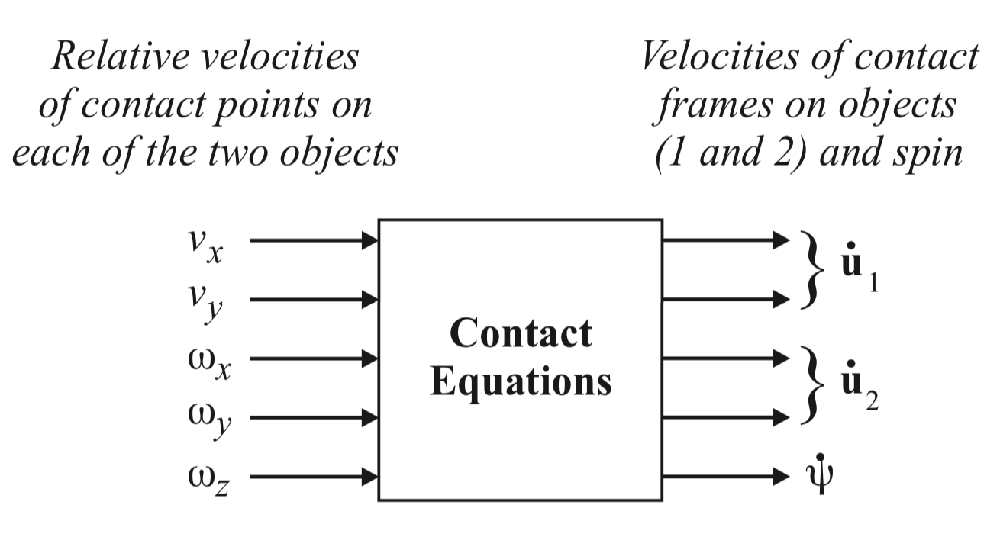
Dynamics
Friction cone
- No slippage to occur
- Torsional friction cone for soft finger
Force closure
Resist any possible diction of force/torque perturbation to the object. (Stable grasp).
Note: manipulable refers to the manipulator can actively accommodate all object motion directions while maintaining contact.
Internal force
A vector of contact force that impart no resultant force to the object. Lies in the null space of the grasp map $G$.
Unidirectional constraint
Finger can only push, not pull, on the object surface.
Note: There are many solutions of grasp forces that satisfy grasp stability while keeping each contact force inside friction cone and supplying some internal forces. This leads to an optimization problem.
Dexterous Motion Planning
Levels of control for dexterous manipulation
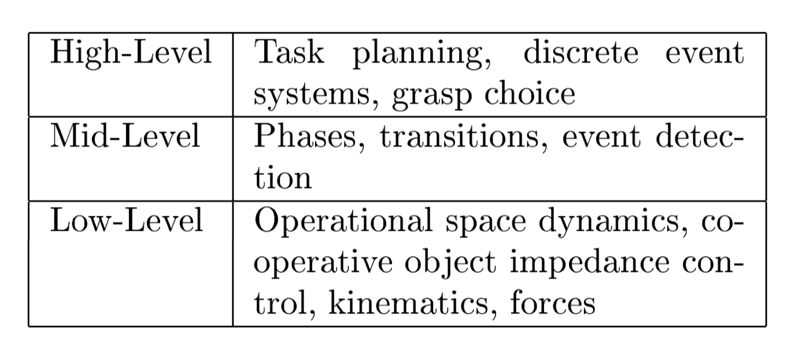
Major problems:
- Motion planning of the object (to desired configuration)
- Motion planning of the fingers (to impart the motion of object)
Steps:
Reachability analysis [Kerr, Roth, 1986]
Grasp map [Leveroni, 1997]
Determine whether local motions will suffice to reorient the object.
Regrasps (grasp gaits)
Grasp quality:
- Contact locations, contact forces, finger poses
- Wrench requirement and twist requirement [Li, Sastry, 1990]
- Non-convex non-linear optimization
- Analytic geometry approach [Nguyen, 1988]
Control Frameworks
Example: object impedance control for rolling manipulation
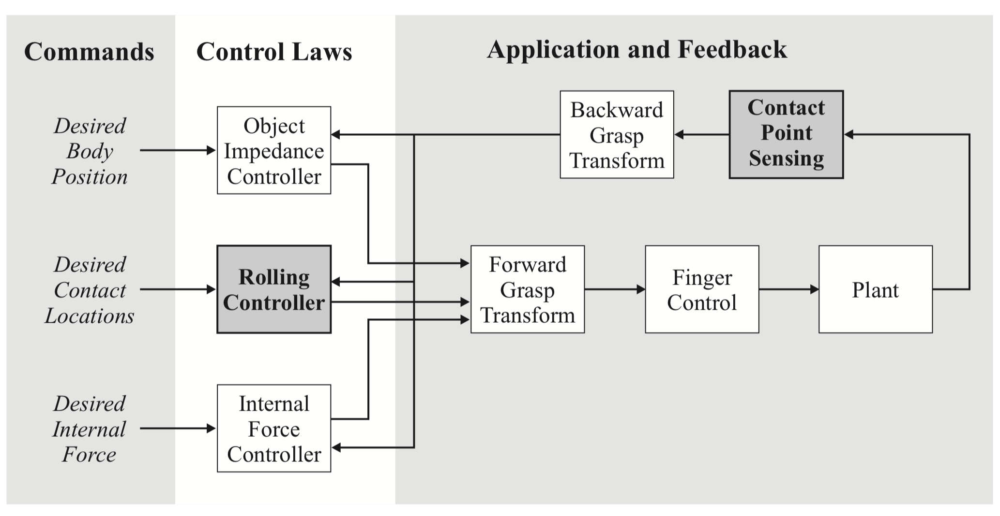
- Different phases are likely to use different control laws
- Phase management
- Smoothness can be critical when even detection relies on dynamic sensors
Rodriguez, Alberto, Matthew T. Mason, and Steve Ferry. “From caging to grasping.” The International Journal of Robotics Research 31.7 (2012): 886-900.
Xu, Jijie, and Zexiang Li. “A kinematic model of finger gaits by multifingered hand as hybrid automaton.” IEEE Transactions on Automation Science and Engineering 5.3 (2008): 467-479.
Xu, Jijie, Tak-Kuen John Koo, and Zexiang Li. “Sampling-based finger gaits planning for multifingered robotic hand.“ Autonomous Robots 28.4 (2010): 385-402.
How to generate a feasible sequence of different grasp status to accomplish the manipulation task.
Finger gaits hybrid nature:
- Discontinuity caused by the relocation of the fingers
- Continuity maintained by the manipulation of objects
Finger gaiting primitives:
- Finger substitution [Hong et al. 1990; Han and Trinkle 1998; Xu and Li 2006]
- Grasping fingers
- Free fingers (stay at pre-described configuration and perform the substitution)
Assumptions:
- Rigid body
- Finger tip point contact
- No sliding or rolling
Bicchi, Antonio. “Hands for dexterous manipulation and robust grasping: A difficult road toward simplicity.“ IEEE Transactions on robotics and automation 16.6 (2000): 652-662.
Minimalistic Principal : Use the least number of actuators, the simplest set of sensors, etc., for a given task.
Complexity reduction is especially important in terms of hardware components of the system. Designing simple and effective devices for executing nontrivial tasks is actually much more difficult than contriving very complex systems for the same job.
Manipulative Dexterity
The capability of the hand to change the position and orientation of the manipulated object from a given reference configuration to a different one, arbitrarily chosen within the hand workspace.
Classical Designs
Design assumptions
- Rigid, hard-finger
- Non-rolling and non-sliding contacts
- Number of actuators ranges between 9 ~ 32
The minimum DoF to achieve dexterity under above conditions is 9 [Salisbury 1985]. To let finger tip track contact point location in 3D, 3 DoFs per finger are strictly necessary.
Three-joint, three-finger design
Salisbury Hand, optimize a measure of individual manipulability of the finger
More joints per finger, some are coupled
Technical University of Munchen Hand
Four- and five- fingered hands
Utah/MIT Hand
Alternative Designs
Other design assumptions:
Soft Finger (4 DoFs are needed to achieve dexterity)
Regrasping and Finger Gaiting
Hybrid system : Involves both continuous dynamic systems (kinematics and dynamics of manipulation, effects of gravity, slipping, etc.), and discrete-event system. (Open problem)
Sliding and Rolling
Manipulation by sliding
Open Problem: 1. Determine margin of stability for contact from sensor reading. 2. Grasp synthesis for selectively preventing and allowing slippage motions of grasped objects.
Open Issues:
- Planning sliding and rolling motions among obstacles
- Stabilize the pose of a general rolling object with an efficient feedback law
- Analysis of the sensitivity of planning and control to modeling errors
- Generalization of useful notion (manipulability, dexterous workspace, etc.) for nonholonomic systems
Grasp Robustness
The capability of keeping hold of manipulated objects in spite of all possible distrubances (unexpected forces, erroneous estimates of the object characteristics, etc.) while maintaining a gentle enough grip not to cause any damage.
Design
- Task dependent
- Precision grasp, Power grasp
- Designed to manipulate objects by using inner surfaces
Grasp Properties
Force closure
Form closure
Force distribution problem
Imposing grasping forces that guarantee slippage avoidance
Stability
Def 1 (Lyapunov theory): trend to come back to reference point.
Def 2 (Lagrange): local minimum of the potential energy for a conservative system.
Grasping and the Kinematics of the Hand
Human Operability
Allowance for an easy and friendly interface with the human operator.
Anthropomorphic hand
Pros:
- Easy for human operator mapping via sensorized gloves
- Taught by demonstrating
- Tele-manipulation (master and slave hand)
Cons:
- Complex kinematic structure
- High number of actuators
- Sophistication of sensing systems
lead to worse
- Cost-effectiveness
- Reliability
Huber, M., & Grupen, R. A. (2002). Robust finger gaits from closed-loop controllers. In IEEE/RSJ International Conference on Intelligent Robots and Systems (Vol. 2, pp. 1578-1584). IEEE.
Kaneko, Makoto, Yutaka Hino, and Toshio Tsuji. “On three phases for achieving enveloping grasps-inspired by human grasping.“ Proceedings of International Conference on Robotics and Automation. Vol. 1. IEEE, 1997.
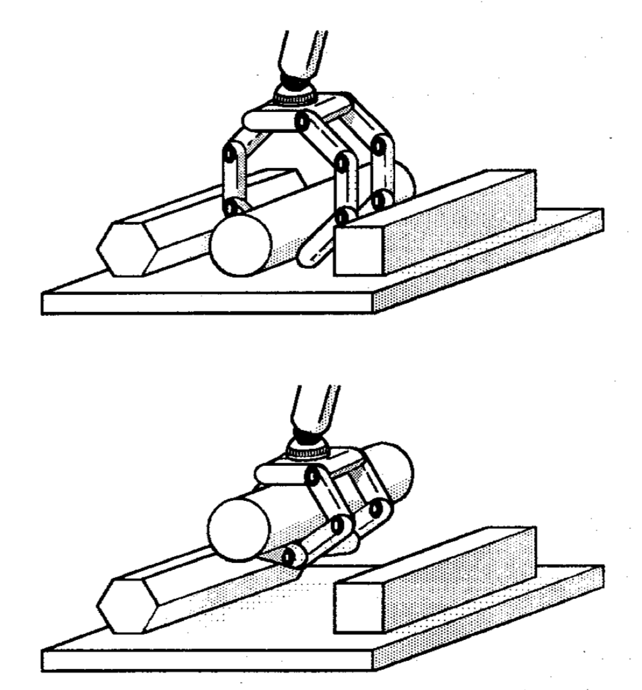
A practical procedure for achieving a power grasp for cylindrical object.
Approach phase
Insert the finger into the space between the table and the bottom part of the object.
Related:
Lifting phase
Lift up object from table.
Grasping phase
Constant joint torque for all joints to achieve power grasp.
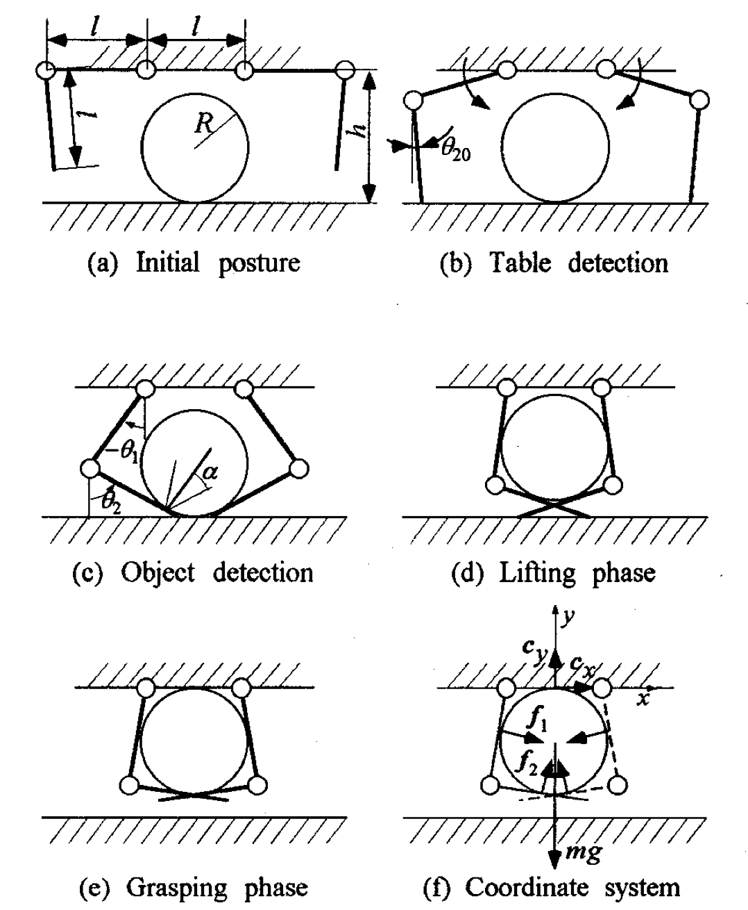
Hasegawa, Yasuhisa, et al. “Dexterous manipulation from pinching to power grasping-strategy selection according to object dimensions and grasping position.“ 2003 IEEE International Conference on Robotics and Automation (Cat. No. 03CH37422). Vol. 1. IEEE, 2003.
Problem:
- Three-finger robotic hand (4 joints each finger with first two joints coupled together)
- Cylindrical object
- Pinch grasp to power grasp transition
Pinching-Grasping Transition strategies:
Strategy 1:
- F1, F2: pinch grasp
- F1, F2: lift up one side of the object
- F3: inserted under the bottom of the object
- F3: push up the object until object hits the palm
- F1, F2: bends inside with slip for power grasp
Strategy 2:
- Similar to strategy 1
- Table surface as a extrinsic finger in phase 2
Strategy 3:
- F1, F2: pinch grasp
- Arm: invert hand and object 180 degree
- Gravity: object comes down to the palm automatically
- F3: enclose the object
- F1, F2: release and re-grasp the object
Strategy 4:
- F1, F2: Pinch the left side of object
- Arm: lift up the object and rotate the hand upside down
- F1. F2: release the object (drop to the palm)
- F1, F2, F3: enclose all fingers
Strategy 5:
- Similar to strategy 4
- Arm: rotate hand system 180 along axis of the cylindrical object in phase 2
Strategy 6:
- F1, F2, F3: pinch grasp
- Arm: rotate upside down
- F1, F2, F3: release and re-grasp
Performance index:
Chavan-Dafle, Nikhil, Rachel Holladay, and Alberto Rodriguez. “In-hand manipulation via motion cones.“ arXiv preprint arXiv:1810.00219 (2018).
Alvaro Paz, and Gustavo Arechavaleta. “Practical guide to solve the minimum-effort problem with geometric algorithms and B-Splines.” IEEE International Conference on Robotics and Automation (2019).
Transcription methods:
- optimal control problem $\Rightarrow$ nonlinear program
The original minimum effort problem:
Direct transcription with B-Splines:
Robot configuration $\boldsymbol{q}(t)$ is transcribed to
where $S$ is a set of prescribed time points $ \{s_0, s_1, \cdots, s_M\}$.
- basis functions $b_r(s) : S \rightarrow \mathbb{R} $
- control points $\boldsymbol{c}_r \in \mathbb{R}^n$
Transcribed problem:
The discretized robot dynamic equations is now represented as
Note that if $S$ is fixed, then $B(s), B’(s)$ and $B’’(s)$ are computed only once with time complexity $O(m^2)$ where $m=3$ in the paper. The time complexity is not depend on the number of control points $N$.
Optimality conditions
KKT first order necessary condition:
which can be nicely computed by differentiating.
Horak, Peter C., and Jeff C. Trinkle. “On the Similarities and Differences Among Contact Models in Robot Simulation.” IEEE Robotics and Automation Letters 4.2 (2019): 493-499.
For the dynamics equations of a generic system
by intergrating the above equation for a fixed time step $\Delta t$, we have
where $\boldsymbol{p}$ is the impulse due to friction during $[t, t + \Delta t]$.
Based on Columb’s friction law,
Let denote the relative contact velocity $\boldsymbol{c} = J \dot{\boldsymbol{q}}$. Substituting the impulse dynamics we have
Solve for unknowns $\boldsymbol{c}$ and $\boldsymbol{p}$ subject to constraints like
Coulomb’s friction model
The friction impluse lies in a quadratic friction cone
such that maximize the dissipative work (against contact velocity if sliding).
No inter-penetration
No contact force at a distance (complementarity constraints)
Let $d$ be the contact normal gap distance. The first order Taylor’s expansion gives $d(t + \Delta t) \approx d(t) + c_n(t) \cdot \Delta t$, which implies
A Nonlinear Complementarity Problem (NCP) is, given a smooth mapping $\boldsymbol{f} : \mathbb{R}^n \rightarrow \mathbb{R}^n$ , the problem of finding values for the variables $\boldsymbol{z} = (z_1, z_2, \cdots , z_n)^\top$ and $\boldsymbol{w} = (w_1, w_2, \cdots , w_n)^\top$ such that
and, for all $i$ from $1$ to $n$, $\require{color} \color{red} z_i \geq 0, w_i \geq 0$ and $\require{color} \color{red} z_i w_i = 0$. (complementarity constraints).
A Linear Complementarity Problem (LCP) is the linear case of the NCP problem, assuming
where $M$ is a given $n\times n$ matrix and $\boldsymbol{q}$ is a $n$-vector.
Complementarity problems can
- model transitions between sticking and sliding contact
- represent the fact that contact forces arise if and only if contact exists
- incorporate quadratic friction cone (Nonlinear CP)
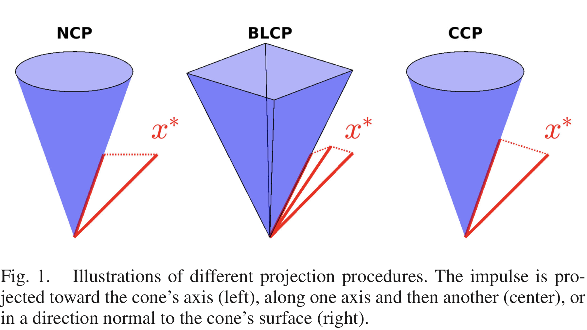
NCP formulation can be relaxed to achieve faster solution times and/or invertible dynamics. Four models are introduced in this paper:
Nonlinear Complementarity Problem (NCP)
Quadratic friction cone
Bounded Linear Complementarity Problem (BLCP)
Pyramid friction cone. (ODE and Bullet).
Cone Complementarity Problem (CCP)
Replace complementarity condition with
where $|\boldsymbol{c}_s|$ is magnitude of contact sliding velocity. This relaxation makes it to form a cone complementarity problem. (Chrono Physics Engine).
Convex Optimization
Replace the complementarity condition with a convex optimization problem to minimize the kinectic energy in terms of $\boldsymbol{p}$
where $R$ is positive diagnoal matrix. The model provides smooth, invertible dynamics, which is useful for model-based planning and control. (Mujoco Physics Engine).
Betts, John T. “Survey of numerical methods for trajectory optimization.” Journal of guidance, control, and dynamics 21.2 (1998): 193-207.
Manchester, Z., Doshi, N., Wood, R. J., & Kuindersma, S. Contact-Implicit Trajectory Optimization using Variational Integrators.
Haddadin, Sami, Alessandro De Luca, and Alin Albu-Schäffer. “Robot collisions: A survey on detection, isolation, and identification.“ IEEE Transactions on Robotics 33.6 (2017): 1292-1312.
Model based algorithms for real-time collision detection, isolation, and identification using only proprioceptive sensors.
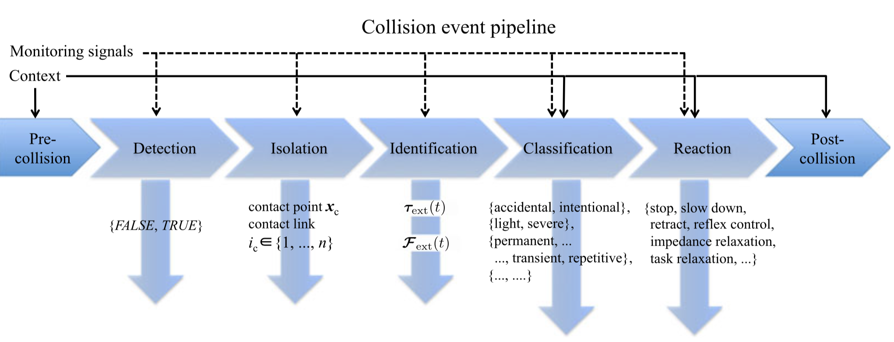
Collision event pipeline
- Pre-collision
- Collision avoidance (offline/online motion planning), and/or
- Anticipatory robot motion to minimize impact effects (external sensors)
- Detection
- True/false output indicates whether collision occurred
- Problem: Select threshold on the monitoring signals
- Signals: motor current, actuator torque, or tactile sensor reading
- Isolation
- Which robot part is involved?
- Contact point location $\boldsymbol{x}_c$
- Identification
- Classification
- Reaction
- Post-collision
Xu, Jijie, T. John Koo, and Zexiang Li. “Finger gaits planning for multifingered manipulation.“ 2007 IEEE/RSJ International Conference on Intelligent Robots and Systems. IEEE, 2007.
A robotic hand may change its grasp status and relocate some of its fingers in order to perform a large scale manipulation. Such a strategy is called a finger gait. In this paper, a randomized manipulation planning algorithm is proposed to solving the finger gait planning problem. One of the most used finger gaiting primitives, finger substitution, is introduced. Because of its discrete-continuous characteristics, the kinematics model of a finger substitution is formulated into a hybrid automaton. Considering the discrete and continuous topology of the automaton, both the discrete metric and continuous metric are defined on the state space. An improved RRT based planner is proposed to find a feasible finger substitution. Finally, simulation results verify the validity of the proposed finger gait planner.
Kim, Chung Hee, and Jungwon Seo. “Shallow-Depth Insertion: Peg in Shallow Hole Through Robotic In-Hand Manipulation.” IEEE Robotics and Automation Letters 4.2 (2019): 383-390.
Staub, Nicolas, et al. “The Tele-MAGMaS: An Aerial-Ground Comanipulator System.“ IEEE Robotics & Automation Magazine 25.4 (2018): 66-75.
Hong, Jiawei, et al. “Fine manipulation with multifinger hands.“ Proceedings., IEEE International Conference on Robotics and Automation. IEEE, 1990.
Finger gaits: Periodic sequence of finger relocation.
Assumptions:
- Smooth object (no corner)
- Isolated points finger model
- Friction cone at point of contact
- Any pair of fingers has angle limitation $ \theta_{ij}^l \leq {\rm ang}(\boldsymbol{r}_{ij}, \hat{\boldsymbol{x}}) \leq \theta_{ij}^u)$
- Ordering of fingers on the boundary of the object keeps same
Three Fingers Planar Manipulation
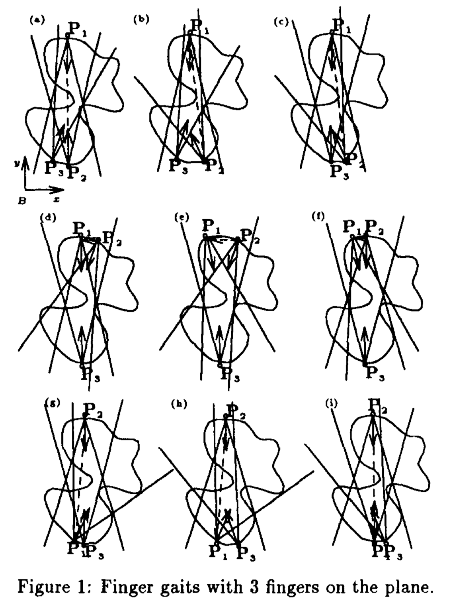
Proposition: Under assumption 1-3, there exists a two finger force closure grasp of object, regardless of convexity.
Proof:
Force closure conditions:
Let $\gamma(s): S^1 \rightarrow \partial A$ be a diffeomorphism that represents a point on the object boundary. The distance between two boundary points is defined as
Let $(\bar{s}_1, \bar{s}_2)$ be the maximum of $f$, then we have
Therefore, $P_1 = \gamma(s_1), P_2 = \gamma(s_2)$ satisfy the first two conditions. The third condition is simultaneously achieved since $P_1, P_2$ are maximizing the distance.
Zhang, Hong, Kazuo Tanie, and Hitoshi Maekawa. “Dextrous manipulation planning by grasp transformation.“ Proceedings of IEEE International Conference on Robotics and Automation. Vol. 4. IEEE, 1996.
Outline:
Dexterous manipulation planning framework:
Identify canonical grasps
Defined in terms of contact pairs between topological features of the hand and the object.
Obtain possible transitions between the grasps
Result expressed in the form of a grasp transformation graph.
Manipulation planning by searching the grasp
Connecting initial and goal configuration.
Study dexterous manipulation through a process of decomposition.
Task modeling:
Topological feature (TF):
Geometry and geometric attributes
- Rect: surface, edge, vertex
- Cylinder: surface, surface patch, curved edge
- Ellipsoid: surface patch
The set of the TF’s of the hand or the object ($h_\alpha$ is the instance of TF’s):
Example $F^R = \{ \text{edge 1}, \text{edge 2}, \cdots , \text{surface patch 6} \}$
Grasp: defined as a contact state with $m$ contact pairs
Example $g = \{ (h_1, o_2), (h_3, o_3)\}$
Grasp taxonomy: a set of grasps
Note: Grasp taxonomy need to be manually specified.
Grasp Transition Graph
- Vertex: canonical grasp defined above
- Edge: valid transition from one grasp to another, directed
- Control strategy: employed for transition
- Depend on nature of transition
- Sensor information
- Capability of hand
Manipulation Planning
- Optimal path (optimality measure for all feasible paths)
- Offline evaluation
- Save result ($g_i \rightarrow g_k$) in a $n\times n$ matrix for online lookup
Grasp Taxonomy example:
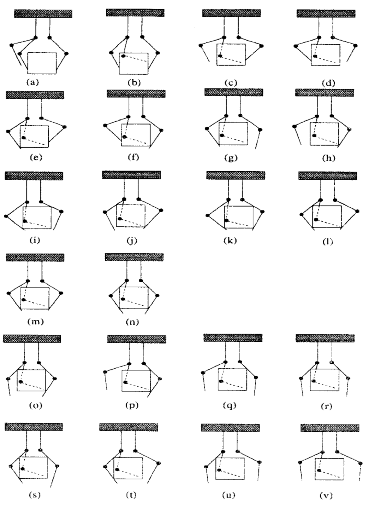
Graph example:
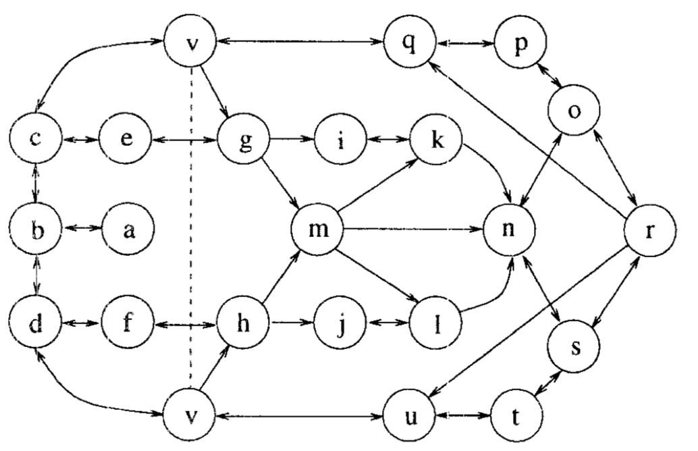
Chen, I-Ming, and Joel W. Burdick. “Finding antipodal point grasps on irregularly shaped objects.” IEEE transactions on Robotics and Automation 9.4 (1993): 507-512.
Han, L., Guan, Y. S., Li, Z. X., Shi, Q., & Trinkle, J. C. (n.d.). Dextrous manipulation with rolling contacts. Proceedings of International Conference on Robotics and Automation. doi:10.1109/robot.1997.614264
Key points:
- Contact kinematics [6]
- Non-holonomic motion planning [2] [7]
- Grasp stability [8]
Contact coordinate $\eta = (\alpha_f, \alpha_o, \psi)$ where $\alpha_f = (u_f, v_f)$ and $\alpha_o = (u_o, v_o)$ are local coordinates of finger frame $F$ and object frame $O$, $\psi$ is the angle of contact.
Nonholonomic Motion Planning
A driftless nonlinear control system:
where $q \in \mathbb{R}^n$ represents the states, $u = (u_1, \cdots, u_m), m < n$ represents the control inputs, $g_1, \cdots, g_m$ defines a nonholonomic distribution in the C-space of the system.
Han, Li, and Jeffrey C. Trinkle. “Dextrous manipulation by rolling and finger gaiting.” Proceedings. 1998 IEEE International Conference on Robotics and Automation (Cat. No. 98CH36146). Vol. 1. IEEE, 1998.
Hang, Kaiyu, Andrew S. Morgan, and Aaron M. Dollar. “Pre-Grasp Sliding Manipulation of Thin Objects Using Soft, Compliant, or Underactuated Hands.“ IEEE Robotics and Automation Letters 4.2 (2019): 662-669.
Why soft or under-actuated hands?
- Fingers can adaptively reconfigure when external force are applied
- Do not require force or tactile sensing
- Convert force control to motion control
- Enables integrated grasp and motion planning
- Allows violation of the environment constraints (Touching depth tolerance)
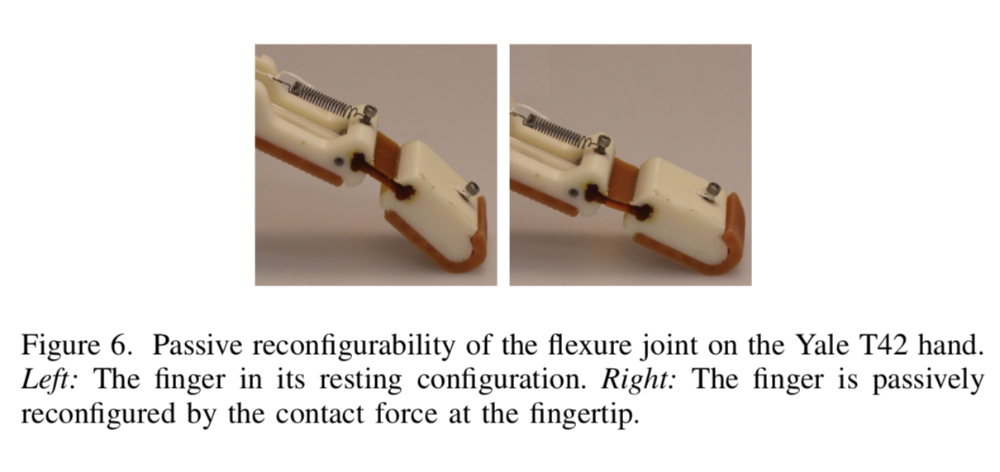
Start and goal configurations
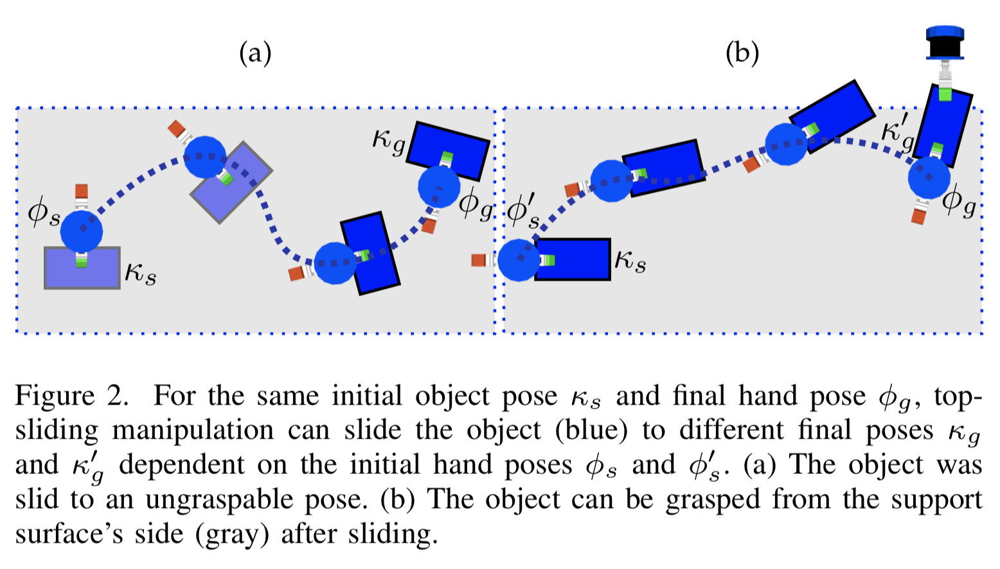
- The start-goal pair determines whether the object graspable in the end
- Many pairs can not be connected by an arm motion due to the environment constraints
- Inefficient to sample and check before motion planning
Sample-able Regions for an Integrated Solution
- Sampling start and goral configuration
- Connecting the two sample forests bidirectionally
- Projecting configurations to the constraint manifold
- Validating the connected pairs once connected
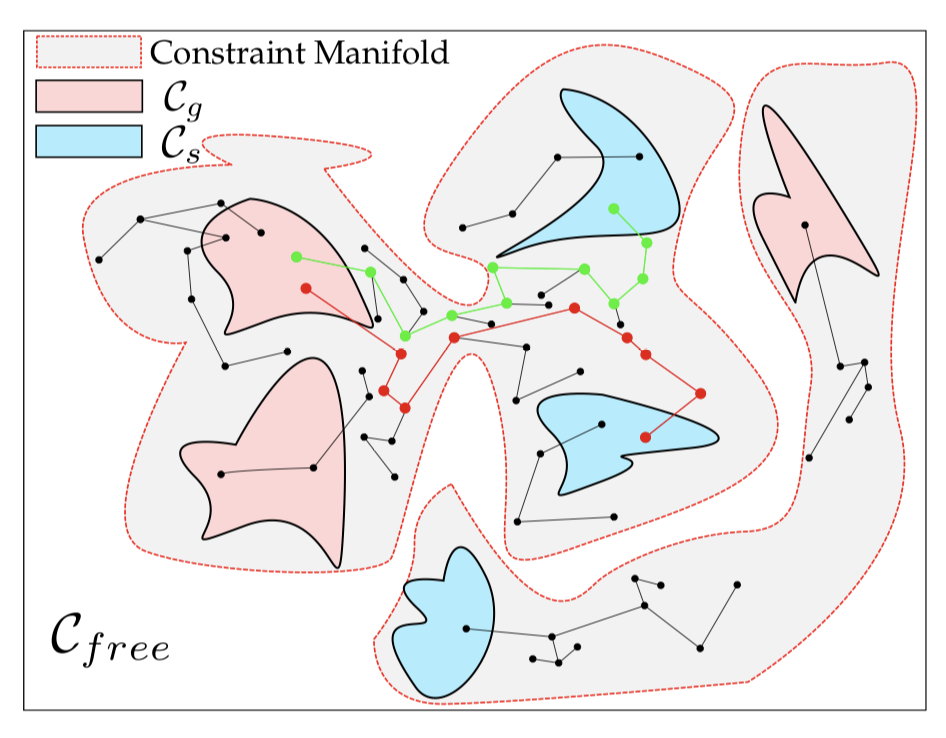
Andrychowicz, Marcin, et al. “Learning dexterous in-hand manipulation.” arXiv preprint arXiv:1808.00177 (2018).
Dynamics and Simulation
Trinkle J, Pang J, Sudarsky S and Lo G (1997) “On dynamic multi-rigid-body contact problems with coulomb friction.” ZAMM—Journal of Applied Mathematics and Mechanics 77(4): 267–279.
Todorov, Emanuel. “Convex and analytically-invertible dynamics with contacts and constraints: Theory and implementation in MuJoCo.“ 2014 IEEE International Conference on Robotics and Automation (ICRA). IEEE, 2014.
Featherstone, Roy, and David Orin. “Robot dynamics: equations and algorithms.“ Proceedings 2000 ICRA. Millennium Conference. IEEE International Conference on Robotics and Automation. Symposia Proceedings (Cat. No. 00CH37065). Vol. 1. IEEE, 2000.
Walker, Michael W., and David E. Orin. “Efficient dynamic computer simulation of robotic mechanisms.“ Journal of Dynamic Systems, Measurement, and Control 104.3 (1982): 205-211.
Contact modeling has been accomplished in two significantly different ways. The first, with hard constraint mode, involves equation augmentation of the dynamic formulation using the constraint force equations (arising from acceleration constraints) and solving for the constraint forces in the process of solving for the accelerations in the system. As a result, when more than one leg is on the ground, a more complex closed-chain system results.
A more realistic approach to modeling ground compliance can be achieved with a different approach using compliant constraints. Contact forces are computed that are only a function of the positions and velocities of the feet relative to the ground. Called the Decoupled Tree-Structure (DTS) Approach, this method models spring and dampers between the legs of the system and the ground as illustrated in Figure 1. By breaking the closed loops (through ground contacts) with the use of compliant contacts, the system is decoupled into a tree-structure (and hence its name). With this approach, differences in terrain conditions can be easily modeled by differences in spring and damper parameters which can even be nonlinear.
Stewart, David, and Jeffrey C. Trinkle. “An implicit time-stepping scheme for rigid body dynamics with coulomb friction.“ Proceedings 2000 ICRA. Millennium Conference. IEEE International Conference on Robotics and Automation. Symposia Proceedings (Cat. No. 00CH37065). Vol. 1. IEEE, 2000.
Markus Rickert and Andre Gaschler. Robotics Library: An object-oriented approach to robot applications. In Proceedings of the IEEE/RSJ International Conference on Intelligent Robots and Systems (IROS), pages 733–740, Vancouver, BC, Canada, September 2017.
Robotics Library
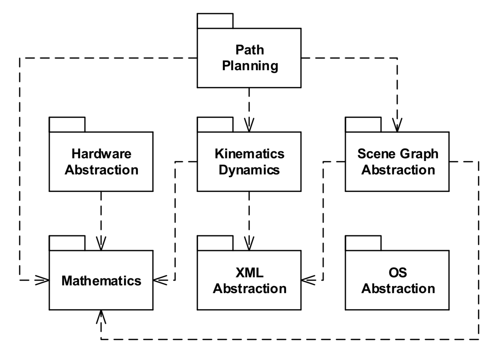
Features:
Pure C++ library with consistent APIs
Not a middleware like ROS.
Collision detection and visualization
Platform independent
Full real-time support
Robotics Library provides a large collection of robot planning and control software in one coherent whole. This library includes a collection of sampling-based planners, including RRT and PRM. RL makes some use of templates but largely depends on virtual classes and methods to adapt different robot systems.
Control
Raibert, M. H., & Craig, J. J. (1981). Hybrid position/force control of manipulators. Journal of Dynamic Systems, Measurement, and Control, 103(2), 126-133.
Hogan, Neville. “Impedance control: An approach to manipulation.” 1984 American control conference. IEEE, 1984.
part 1 - theory, part 2 - implementation, part 3 - application
Khatib, O. (1987). A unified approach for motion and force control of robot manipulators: The operational space formulation. IEEE Journal on Robotics and Automation, 3(1), 43-53.
Force control application:
- Accommodation
- Joint compliance
- Active stiffness
- Impedance control
- Hybrid position/force control
Operational coordinates
Schlegl, T., & Buss, M. (1998, May). Hybrid closed-loop control of robotic hand regrasping. In Proceedings. 1998 IEEE International Conference on Robotics and Automation (Cat. No. 98CH36146) (Vol. 4, pp. 3026-3031). IEEE.
Posa, Michael, Cecilia Cantu, and Russ Tedrake. “A direct method for trajectory optimization of rigid bodies through contact.“ The International Journal of Robotics Research 33.1 (2014): 69-81.
Trajectory optimization of multiple rigid bodies system undergoing inelastic collisions and subject to Coulomb’s friction. Contact constraints are formulated using the complementarity conditions. However, the contact forces $\boldsymbol{\lambda}$ are treated as optimization parameters, which is similiar to how direct methods treat the state evolution implicitly. This allows the optimizer automatically choose the contact modes and it is good for multi-contact manipulation.
Dietrich, A., Ott, C., & Albu-Schäffer, A. (2015). An overview of null space projections for redundant, torque-controlled robots. The International Journal of Robotics Research, 34(11), 1385-1400.
Margaret Koehler, Allison M. Okamura, and Christian Duriez. “Stiffness Control of Deformable Robots Using Finite Element Modeling” IEEE Robotics and Automation Letters (RAL)
Cristian Secchi and Federica Ferraguti. “Energy Optimization for a Robust and Flexible Interaction Control” 2019 International Conference on Robotics and Automation (ICRA)
Mu, Xiaoqian, Yuechuan Xue, and Yan-Bin Jia. “Robotic Cutting: Mechanics and Control of Knife Motion.“ Spine 3.r1: u1.
Legged Robot
Quan Nguyen, Matthew. J. Powell, Benjamin Katz, Jaed Di Carlo, and Sangbae Kim. “Optimized Jumping on the MIT Cheetah 3 Robot.” IEEE International Conference on Robotics and Automation (ICRA), submitted, 2019.

System configuration $\boldsymbol{q}$ represents the position in the world frame ($x, z$) and the pose of the robot:
System dynamics:
where $B$ and $B_{\rm fric}$ define how the actuator torques $\boldsymbol{\tau}$ and the joint friction torque $\boldsymbol{\tau}_{\rm fric}$ enter the model.
Jumping motion contains four sequential phases for totally $N$ cycles with fixed sampling time $T = 10$ms:
- All-leg contact phase (0.5s)
- Rear-leg contact phase (0.5s)
- Flight phase (duration is task dependent)
- Landing phase
Trajectory Planner
The actuator torque $\boldsymbol{\tau}(t)$ that drives the robot to the desired configuration is not unique. Assume the jumping trajectory is in a vertical plane. Optimization is used to plan the desired joint torque for the jumping task. The purpose of the cost function is to guide the optimization to converge to a feasible solution.
where $\omega$ are some weights that need to be manually adjusted and $\boldsymbol{q}_{\rm ref}$ is a constant configuration. Following constraints are enforced in the optimization:
- System dynamics
- Joint angle limits, joint velocity limits, torque limits
- Friction cone limits
- Minimum ground reaction force $f_k^z > f_{\rm min}^z$ if in contact
- Initial and final configuration $x, z, \boldsymbol{q}$ (desired final posing $\boldsymbol{q}_N^d$ plays a crucial role in smooth landing)
- Pre-landing configuration: $\boldsymbol{q}_k = \boldsymbol{q}_N^d,\, \dot{\boldsymbol{q}}_k = \boldsymbol{0}$ for the last 0.4s (ensure a favorable landing configuration)
Jumping Controller

Desired joint angle $\boldsymbol{q}_d$, joint velocity $\dot{\boldsymbol{q}}_d$ and feed-forward joint torque $\boldsymbol{\tau}_d$ are known from the planner.
Linear interpolation of reference values to let controller running at 1kHz
PD controller @1kHz employed for regulation of joint angle and velocity
Cartesian PD controller @4.5kHz used to improve tracking performance
Landing Controller
- Significant pitch angle error due to the model mismatch between simulation and experiment
- Recovers the robot from unexpected landing configurations
- Contact detection based on the impact (any $\dot{q}_{\rm knee} \geq {\rm velocity\, threshold} $)
- Clarify between three different contact models:
- Front-leg contact, rear-leg contact and all-leg contact
Consider the Robot dynamics as a rigid body:
we want to find an optimal distribution of leg forces $F$ that eliminate configuration errors.
where $\require{color} \color{red} \boldsymbol{b}_d \color{black} = \begin{bmatrix} m( \color{blue} \ddot{\boldsymbol{p}}_{c,d} \color{black} + \boldsymbol{g}) \\ I_G \, \color{blue} \dot{\boldsymbol{\omega}}_{b,d} \color{black} \end{bmatrix}, \begin{bmatrix} \color{blue} \ddot{\boldsymbol{p}}_{c,d} \\ \color{blue} \dot{\boldsymbol{\omega}}_{b,d} \color{black} \end{bmatrix} =\begin{bmatrix} K_{p,p} (\boldsymbol{p}_{c,d} - \boldsymbol{p}_c) + K_{c, d} (\dot{\boldsymbol{p}}_{c, d} - \dot{\boldsymbol{p}}_{c}) \\ K_{p,\omega} \log (R_d R^\top ) + K_{d, \omega} (\boldsymbol{\omega}_{b, d} - \boldsymbol{\omega}) \end{bmatrix}$.
Note that the QP can be solved in real-time 1kHz and subjects to friction cone constraints. Swing legs have $F_{\rm swing} = 0$.
Substitute $F^*$ back to the system dynamics equation to get joint torque $\boldsymbol{\tau}$.
Hwangbo, Jemin, et al. “Learning agile and dynamic motor skills for legged robots.“ Science Robotics 4.26 (2019): eaau5872.
Yim, Justin K., Eric K. Wang, and Ronald S. Fearing. “Drift-free Roll and Pitch Estimation for High-acceleration Hopping.“ IEEE International Conference on Robotics and Automation (2019)
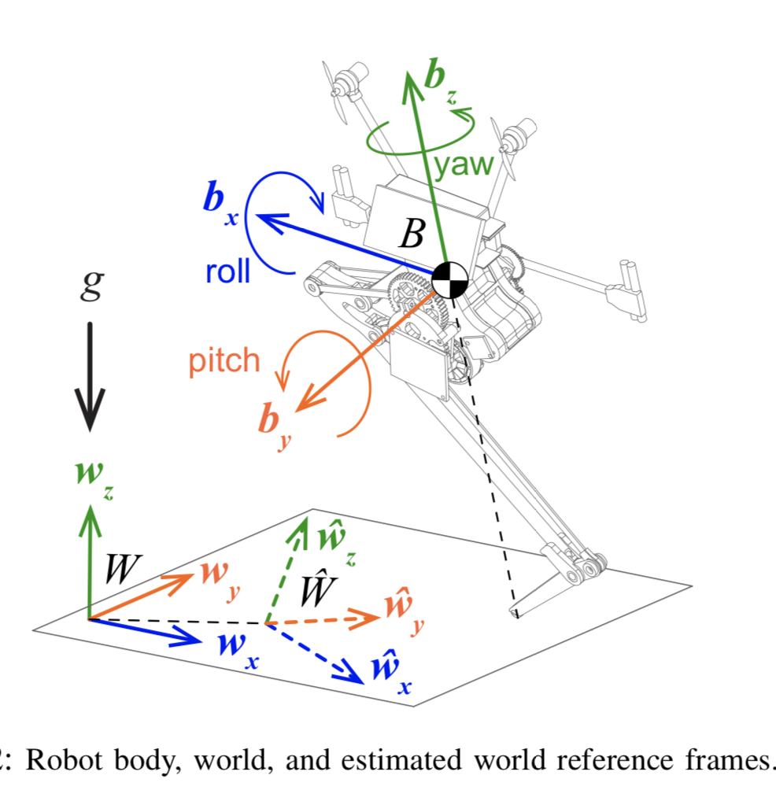
Motivation:
- Runners that operate like Spring Loaded Inverted Pendulums (SLIP) rely on accurate attitude for running control.
- Accelerometer-based attitude drift compensation is difficult in hopping free-fall flight and high-acceleration stance.
- SHOVE estimates attitude using SLIP-like dynamics without any exteroceptive sensing.
Estimation and Control Block Diagram
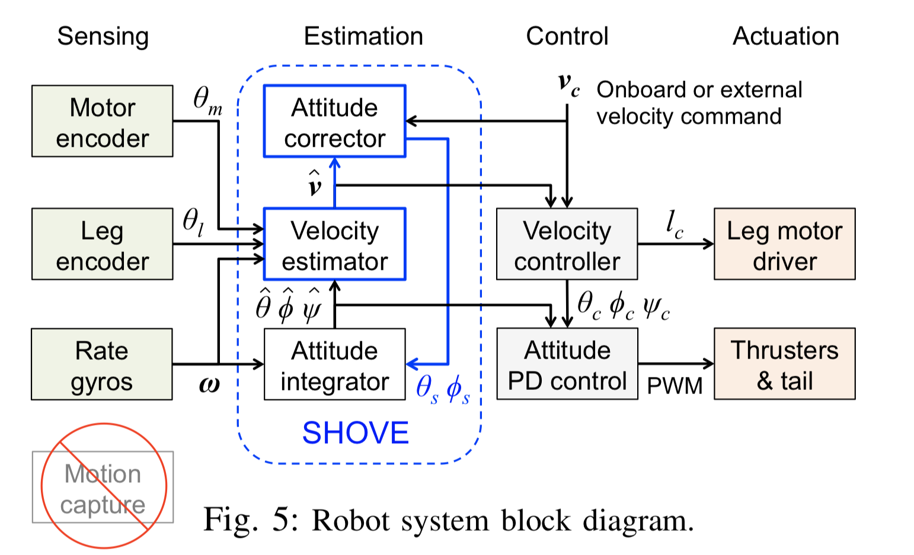
SLIP Hopping Orientation and Velocity Estimation (SHOVE)
Intended trajectory
Trajectory with attitude error
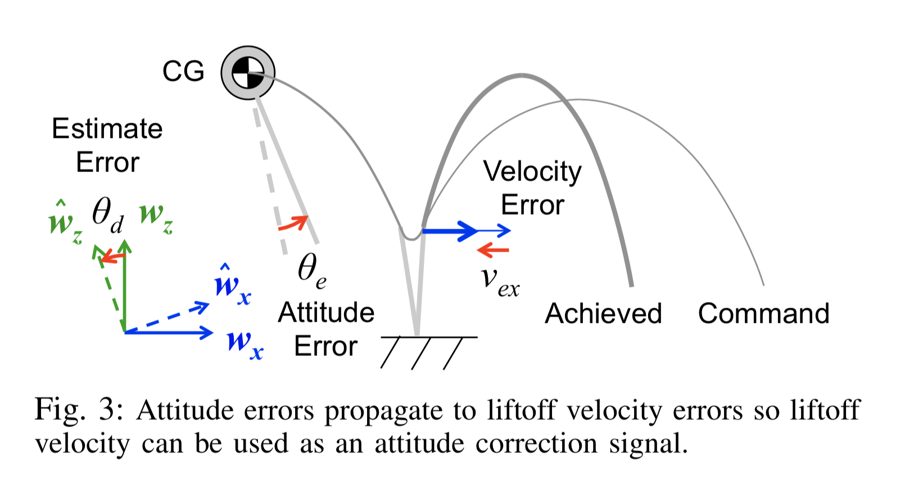
Attitude correction
Estimation and Control Algorithm
While the robot is in the air:
- Estimate Euler angles $\hat{\theta}$ and $\hat{\phi}$ by integrating rate gyroscopes
- Deadbeat velocity controller commands touchdown attitudes $\theta_c$ and $\phi_c$ to control lift-off velocity $v_{LO}$
While the robot lifts off:
- Estimate lift-off velocity $\hat{v}_{LO}$ using leg encoders and calibrated leg model
- Compute attitude corrections $\theta_s$ and $\phi_s$ from horizontal velocity errors $\hat{v}_{ex}$ and $\hat{v}_{ey}$
- Correct attitude estimates $\hat{\theta}$ and $\hat{\phi}$ by subtracting $\theta_s$ and $\phi_s$ from them (SHOVE does not try to correct yaw)
- Repeat for the next jump
Velocity Estimation and Calibration
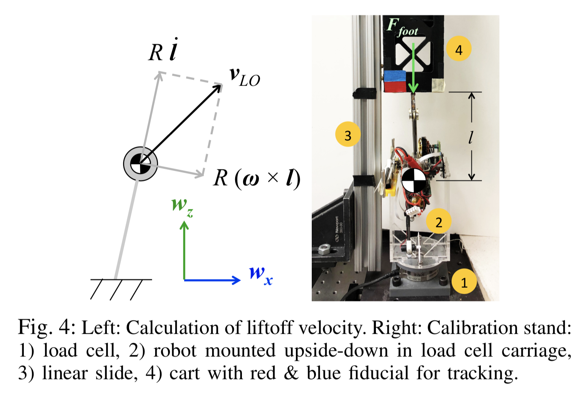
Raibert, M., Blankespoor, K., Nelson, G., & Playter, R. (2008). Bigdog, the rough-terrain quadruped robot. IFAC Proceedings Volumes, 41(2), 10822-10825.
Hardware
Each leg has
- 4 actuators (with force and position sensor)
- 5 degree-of-freedom (one spring passive prismatic joint)
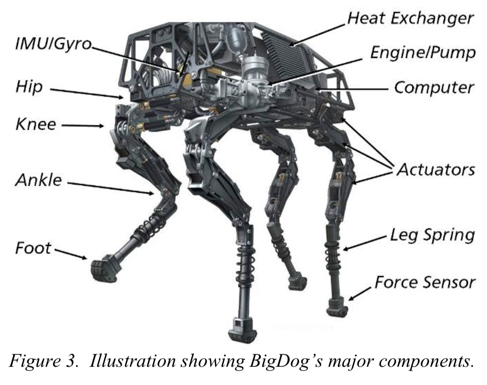
Vision:
- Stereo vision
- LIDAR
Control System
Quadrupedal walking algorithms for inclined and rough terrain.
Control diagram at the individual leg level:
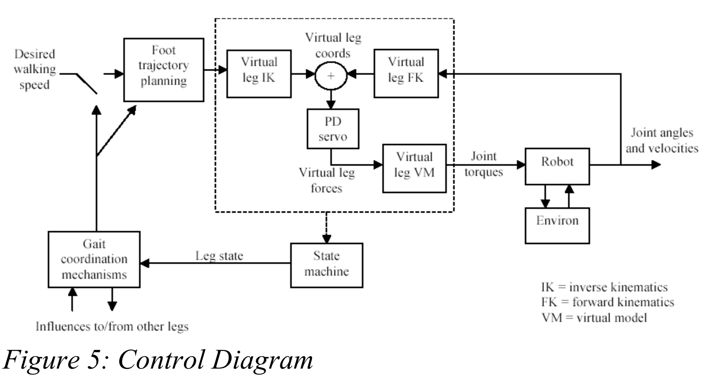
Terrain sensing
Stereo vision
Acquire the shape of 3D terrain.
Joint sensor
Determine when feet are in contact with the ground and to determine the desired load on each leg and actuator.
Posture algorithm
Control body position
Coordinate the kinematics of the legs with their ground reaction forces to produce a desired net behaviour at the body
Implements computed leg compliance on uneven terrain
Control body roll, pitch, and height relative to the ground, thereby allowing BigDog to adapt to local terrain variations without higher-level terrain sensing.
Machine Learning
Bengio, Yoshua. “Practical recommendations for gradient-based training of deep architectures.“ Neural networks: Tricks of the trade. Springer, Berlin, Heidelberg, 2012. 437-478.
Y. LeCun, L. Bottou, Y. Bengio, and P. Haffner, Gradient-based learning applied to document recognition. Proceedings of the IEEE 86.11 (1998): 2278-2324.
LeCun, Y., Bengio, Y., & Hinton, G. (2015). Deep learning. nature, 521(7553), 436.
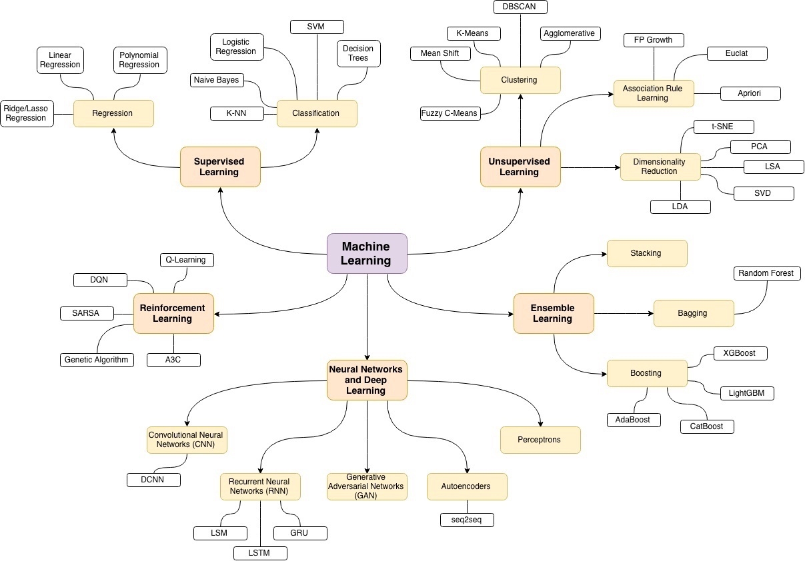
Koutník, Jan, et al. “Evolving large-scale neural networks for vision-based reinforcement learning.” Proceedings of the 15th annual conference on Genetic and evolutionary computation. ACM, 2013
Levine, Sergey, et al. “End-to-end training of deep visuomotor policies.” Journal of Machine Learning Research 17.39 (2016): 1-40.
Pinto, Lerrel, and Abhinav Gupta. “Supersizing self-supervision: Learning to grasp from 50k tries and 700 robot hours.” arXiv preprint arXiv:1509.06825 (2015).
Levine, S., Pastor, P., Krizhevsky, A., Ibarz, J., & Quillen, D. (2018). Learning hand-eye coordination for robotic grasping with deep learning and large-scale data collection. The International Journal of Robotics Research, 37(4-5), 421-436.
Zhu, Y., Mottaghi, R., Kolve, E., Lim, J. J., Gupta, A., Fei-Fei, L., & Farhadi, A. (2017, May). Target-driven visual navigation in indoor scenes using deep reinforcement learning. In 2017 IEEE international conference on robotics and automation (ICRA) (pp. 3357-3364). IEEE.
Yahya, A., Li, A., Kalakrishnan, M., Chebotar, Y., & Levine, S. (2017, September). Collective robot reinforcement learning with distributed asynchronous guided policy search. In 2017 IEEE/RSJ International Conference on Intelligent Robots and Systems (IROS) (pp. 79-86). IEEE.
Gu, S., Holly, E., Lillicrap, T., & Levine, S. (2017, May). Deep reinforcement learning for robotic manipulation with asynchronous off-policy updates. In 2017 IEEE international conference on robotics and automation (ICRA) (pp. 3389-3396). IEEE.
Rusu, A. A., Vecerik, M., Rothörl, T., Heess, N., Pascanu, R., & Hadsell, R. (2016). Sim-to-real robot learning from pixels with progressive nets. arXiv preprint arXiv:1610.04286.
Mirowski, P., Pascanu, R., Viola, F., Soyer, H., Ballard, A. J., Banino, A., … & Kumaran, D. (2016). Learning to navigate in complex environments. arXiv preprint arXiv:1611.03673.
Planning
Li, Z., & Canny, J. (1990). Motion of two rigid bodies with rolling constraint. IEEE Transactions on Robotics and Automation, 6(1), 62-72.
Advantage of rolling compare to sliding:
- The problem of wear (friction) is eliminated
- Simpler control problem
- The set of configurations reachable by rolling is much larger than sliding
Motion planning with nonholonomic constraint
Goodwine, Bill, and Joel W. Burdick. “Motion planning for kinematic stratified systems with application to quasi-static legged locomotion and finger gaiting.“ IEEE Transactions on robotics and automation 18.2 (2002): 209-222.
Şucan, Ioan A., and Lydia E. Kavraki. “Kinodynamic motion planning by interior-exterior cell exploration.“ Algorithmic Foundation of Robotics VIII. Springer, Berlin, Heidelberg, 2009. 449-464.
For system with complex dynamics:
- Physics based simulation is necessary
- High dimensionality
- Sampling valid state is difficult
Strategies:
- Coverage estimation help the planner detect the less explored areas of the state space.
- Bias on the boundary of the explored region.
Formal Definition:
- A motion $\mu = (s, u, t) = (\text{start state}, \text{control input}, \text{duration})$
- A grid $G = \lbrace L_1, L_2, L_3 \rbrace$ is a multi-level discretization of state space
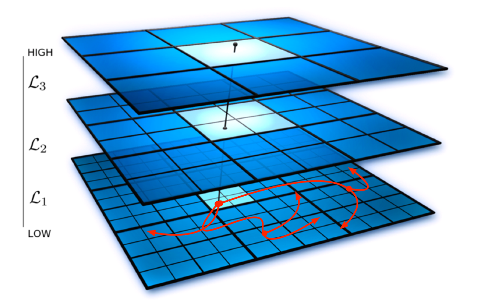
- A cell chain $\boldsymbol{c} = (p_1, p_2, p_3)$ where $p_i \in L_i$ and $p_i$ is inside $p_{i+1}$
Algorithm
- Let $\mu_0$ be the motion of duration $0$ containing solely $q_{\rm start}$
- Create an empty Grid data-structure $G$
- $G$.AddMotion($\mu_0$)
- for $i \leftarrow 1\cdots N$ iterations do
- $\quad$ Select a cell chain $\boldsymbol{c}$ from $G$, with a bias on exterior cells (70%)
- $\quad$ Select $\mu$ from $\boldsymbol{c}$ according to a half normal distribution
- $\quad$ Select $s$ along $\mu$
- $\quad$ Sample random control $u \in U$ and simulation time $t \in \mathbb{R}^+$
- $\quad$ Check if any motion $(s, u, t_o)$, $t_o \in (0, t]$ is valid (forward propagation)
- $\quad$ if a motion is found then
- $\qquad$ Construct the valid motion $\mu_o = (s, u, t_o)$ with $t_o$ maximal
- $\qquad$ if $\mu_o$ reaches the goal region, return path to $\mu_o$
- $\qquad$ $G$.AddMotion($\mu_o$)
- $\quad$ end if
- $\quad$ for every level $L_j$ do
- $\qquad$ $P_j = \alpha + \beta$. (ratio of increase in coverage of $L_j$ to simulated time)
- $\qquad$ Multiply the score of cell $p_j$ in $\boldsymbol{c}$ by $P_j$ iff $P_j < 1$
- $\quad$ end for
- end for
Remarks:
- Cell chain $\boldsymbol{c}$ is selected based on importance score:where
- $\mathcal{I}$ stands for the number of the iteration at which $p$ was created,
- $K$ is initialized to $1$ but may later be updated when expanding from $p$,
- $\mathcal{S}$ is the number of times $p$ was selected for expansion,
- $\mathcal{N}$ is the number of instantiated neighboring cells at the same level of discretization, and
- $\mathcal{C}$ is a positive measure of coverage for $p$
- For $L_1$, $\mathcal{C} = \sum_{\mu \in p} \mu.t$
- For $L_{2}, L_3$, $\mathcal{C} = \text{number of initiated child cells of } p$
- Motion $\mu$ is selected according to a half-normal distribution, such that motions added more recently are preferred for expansion.
- A state $s$ along $\mu$ is then chosen uniformly at random.
- Expanding the tree of motions continues from $s$.
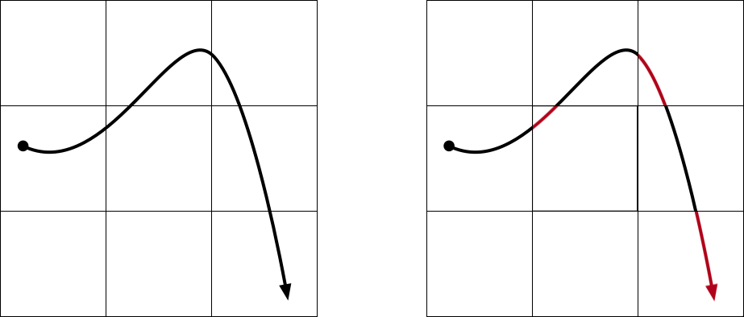
- Exterior cells:
Exterior cells has less than $2n$ instantiated neighboring cells (diagonal neighboring cells are ignored) at the same level of discretization.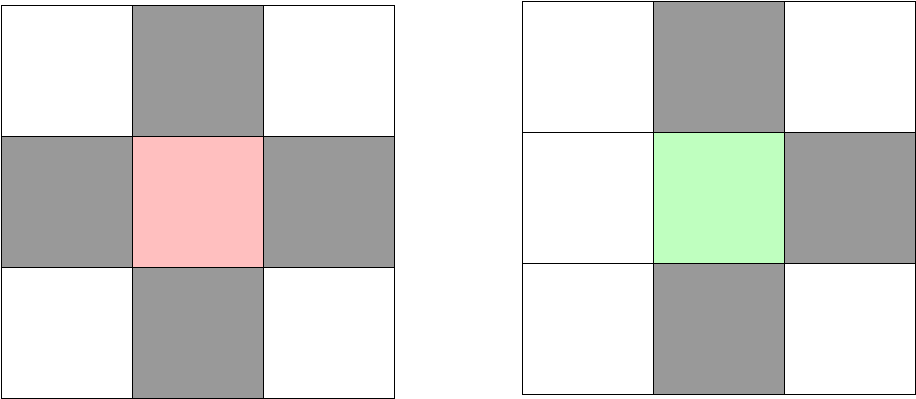
Optimization
Gill, Philip E., Walter Murray, and Michael A. Saunders. “SNOPT: An SQP algorithm for large-scale constrained optimization.“ SIAM review 47.1 (2005): 99-131.
Solover for constrained optimization problems of the form
Sequential quadratic programming (SQP) solves the nonlinearly constrained problem using a sequence of QP subproblems:
- constraints: linearizations of the constraints in the original problem
- objective function: quadratic approximation to the Lagrangian function
SNOPT exploits sparsity in the constraint Jacobian and maintains a limited-memory quasi-Newton approximation $H_k$ to the Hessian of the Lagrangian. A new method is used to update $H_k$ in the presence of negative curvature. The QP subproblems are solved using an inertia-controlling reduced-Hessian active-set method (SQOPT) that allows for variables appearing linearly in the objective and constraint functions. Other features include the treatment of infeasible nonlinear constraints using elastic programming, use of a well-conditioned nonorthogonal basis for the null-space of the QP working set (assisted by sparse rank-revealing LU factors), early termination of the QP subproblems, and finite-difference estimates of missing gradients.
The method used by the QP solver SQOPT is based on solving a sequence of linear systems involving the reduced Hessian $Z^\top H_k Z$, where $Z$ is defined implicitly using the sparse LU factorization. Reduced-Hessian methods are best suited to problems with few degrees of freedom, i.e., problems for which many constraints are active. However, the implementation allows for problems with an arbitrary number of degrees of freedom.
Geometry
Dam, Erik B., Martin Koch, and Martin Lillholm. Quaternions, interpolation and animation. Vol. 2. Copenhagen: Datalogisk Institut, Københavns Universitet, 1998.
Quaternion interpolation method to calculate the quaternion interpolation. These methods have different rotational velocities, depending on the interval fraction.
slerp
Quaternion slerp. Spherical linear quaternion interpolation method. This method is most accurate, but also most computation intense.
lerp
Quaternion lerp. Linear quaternion interpolation method. This method is the quickest, but also least accurate. The method does not always generate normalized output.
nlerp
Normalized quaternion linear interpolation method.
Matlab built-in method qi = quatinterp(p, q, f, method)
Boothby, William M. An introduction to differentiable manifolds and Riemannian geometry. Vol. 120. Academic press, 1986.
Uncategorized
Let $J \in \mathbb{R}^{n\times m}$ be the jacobian obtained at the end effector.
Since for a redundant manipulator, $J$ is not square ($m > n$) and assume $J$ is not singular (${\rm rank}(J) = n$), we know $JJ^\top \in \mathbb{R}^{n \times n}$ is invertible. The pseudo-inverse $J^\dagger$ is defined as the right inverse
Thus, the solution of
is given by
where $\qbdot_{\rm null} = \mathcal{N}(J) \xib,\, \xib \in \mathbb{R}^{m - n} $ lies in the null space of $J$.
The general form of manipulator dynamics with $m$ joints is given by
To let the end effector track a desired trajectory $\xb_d(t)$ in the workspace, we enforce the workspace error decay exponentially:
and the corresponding control law is given by
${\color{blue} \ddot{\qb}_{\rm null}}$ provides us the dexterity to control the other DoF in the joints.